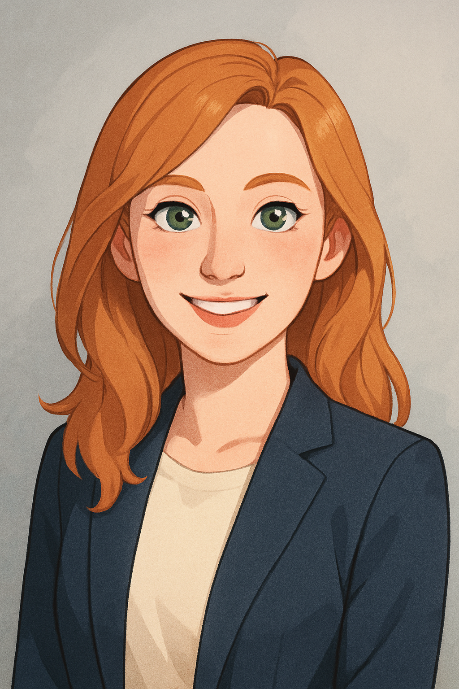

About Me
Hello! I'm Katharine Yuan, a genealogy researcher with a passion for uncovering family stories and helping others connect with their roots. I specialize in German genealogical research, particularly in interpreting old church records and deciphering Gothic script.
With years of experience in historical research, document analysis, and record organization, I strive to make genealogy more approachable and accurate for beginners and professionals alike. Whether you're looking to build a family tree or understand immigration patterns, I'm here to help.
Kat’s Kin Konnections is my digital space to share research guides, templates, and insights from the world of family history. I’m excited to be part of your journey!
My Experience
I have over ten years experience in genealogy reserach.
AAS and BA in Family History Research from Brigham Young University-Idaho
2024 internship at FamilySearch
AG in German Research